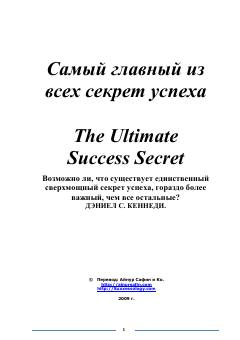

СГMuvaffaqiyatga erishishning eng muhim va asosiy sirlari haqida amaliy qo'llanma.
Ushbu kitobda muallif muvaffaqiyatga erishishning asosiy sirlarini tahlil qiladi va inson o'z hayotini o'zgartirish uchun qanday qadamlar qo'yishi kerakligini tushuntiradi. Kitob muvaffaqiyatli insonlar tajribasiga asoslangan holda, tashqi omillarga bog'liq bo'lmasdan, shaxsiy mas'uliyat va harakat muhimligini ta'kidlaydi.